A Morphological analysis tool. Morphological analysis means finding out the dictionary form from an inflected form.
For example, given πεπαιδεύκα, an inflected form, the morphological analysis finds out that its dictionary form is παιδεύω.
Kalós is the best such tool in the market, period.
A generator of inflection charts. For example: it produces the fuill conjugation of any verb, or the full declension of any noun or adjective.
The inflection of participles and infinitives is also given for all verbs.
The dictionary contains more than 23,000 entries, that can be searched by several criteria. You can search entries that match an exact expression that you input, or just part of an expression.
The expression you search is entered in an input box.
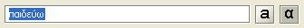Then press the "Search" button.
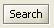And the program will start searching for matching dictionary entries.
Press the "A" or the "Alpha" letter to toggle between Greek and Beta Code input modes.
The "Expression's Location" choice list lets you decide what kind of match you want to search between the expression you search and the dictionary entries.
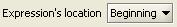The possible values of this choice are:
Which are pretty self-explanatory.
For example, if you selected "Beginning" and entered the text παιδε on the input box,
your search would return all available words beginning with παιδε :
The "Ignore" choice list indicates how accurate the match must be.
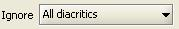The possible values of this choice are:
For example, if you selected "Ignore All Diacritics" and entered the text παιδε on the input box,
then you would have obtained the same results as above, since "All Diacritics" is the least stringent of the searches.
However, if you had chosen "Ignore Nothing", then only the following values would have been returned:
because the remaining 2 entries started with παίδε (accented epsilon), not with παιδε
"Ignore all diacritics" is the most open of the searches.
The results will include all dictionary entries that match the expression you entered, regardless of accents, spirits, macrons (long marks), dieresis or subscripts.
"Ignore long/short" is more restrictive, because it requires that you input the expression (or part of it) exactly as it is found on the dictionary, with the exception of the vowel quantity information.
By the way, in order to explicitly enter a long mark, just type the "underscore" ( _ ) key or combination of keys.
"Ignore nothing" is the more restrictive of the three types of search, because it will only find those words that match exactly whatever you type in the input box, including diacritics and makrons (long marks).
These checkboxes allow you to limit the results of the search according to one or more gramatical types.
For example, if you searched words beginning with παιδε but only had "Verb" checked, then you would have obtained only
which are the only 2 verbs within the results
The "Morphological Analysis" is the ability of taking an inflected word, analyzing its endings and accidence, and finding out what is its canonical or "dictionary" form.
Verbs, for example, are usually named and listed in dictionaries by their present indicative active form, first person singular.
(The infinitve is known in Greek but it does not usually fulfills this purpose, like in most Indoeuropean languages).
For example, παιυδεύω is a canonical form.
If Kalós receives any other inflected form of this verb, for example, ἐπεπαιδεύκει, it can perform a "morphological analysis"
on it and determine that it is the 3rd person singular of the active plusquamperfect of παιυδεύω.
Kalós can perform a morphological analysis on the following types of word:
In order to use the Morphological Analysis, just pick the "Morphological Analysis" tab and type in the inflected form
that you are analyzing into this section's input box.
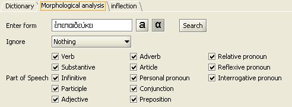
It is in general a good idea to select "Ignore Nothing" for the Morphological Analysis, and type the diacritics of the word. This makes searches much faster.
Another trick to accelerate searches is only to check the type of word you believe the word is.
For example, if you think the word you are analyzing is a verb, uncheck Substantive, Participle, etc.
Once you are ready, hit the "Search" button and the results appear below.
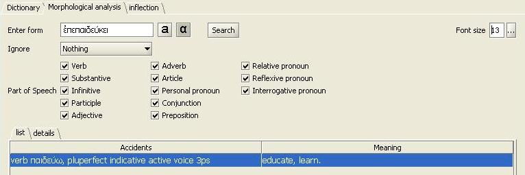
There is also a "deails tab" that shows the selected row. It is useful when the information shown in the results is
too long for the table's cells.
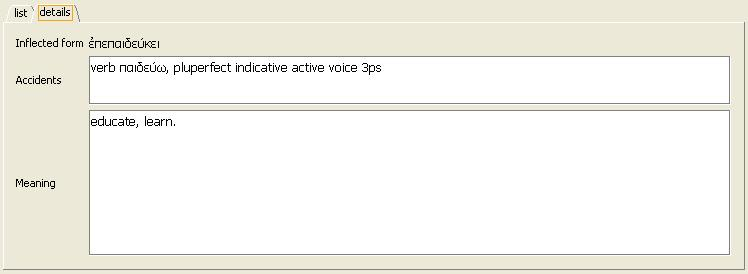
| verbs | Verbs by mode (abridged) |
| Verbs by mode | |
| Verbs by voice | |
| Verbs by mode without dual | |
| Verbs by voice without dual | |
| Participles by case (abridged) | |
| Participles by voice (abridged) | |
| Participles by number | |
| Participles by voice | |
| Participles by number without dual | |
| Participles by number without vocative | |
| infinitives | |
| substantives | Substantives by number |
| Substantives by number without dual | |
| adjectives | Adjectives by gender |
| Adjectives by number | |
| Adjectives by number without dual |
This section is fairly intuitive. Just pick what kind of chart you want to create, then press "Create".
Remember that you must have selected a canonical form on the Dictionary tab first.
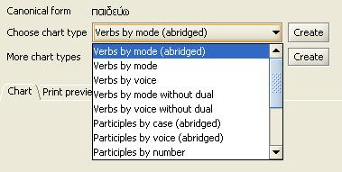
Some charts contain fixed lists of words, therefore then don't depend on what word you selected on the dictionary: they are always available.
These charts can be created using the selector labelled "More chart types":

| articles | Articles by gender |
| personal pronouns | Personal pronouns by case |
| Personal pronouns by case without dual | |
| conjunctions | Conjunctions alphabetically |
| Conjunctions by type | |
| relative pronouns | Relative pronouns I (ὅς, ἥ, ὅ) |
| Relative pronouns II (ὅσπερ, ἥπερ, ὅπερ) | |
| reflexive pronouns | Reflexive pronouns by gender |
| interrogative pronouns | Interrogative pronouns by gender |
After pressing "Create", the inflection chart is generated in 2 different formats:
You can copy Greek text from any Unicode website into Kalós, or vice versa.
All input boxes in Kalós have a Copy/Paste pop-up menu, which appears when you right-click on top of the box.
In all input boxes in Kalós, you have the option of entering text directly in Greek letters or using BETA code.
The Latin "a" stands for BETA code, and the "alpha" stands for Greek characters.
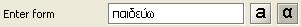
If you choose BETA code, you don't need to capitalize the letters, Kalós does it internally for you
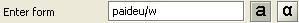
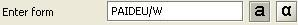
Even if you choose entering Greek characters, the correspondence with the letters on your keyboard
follows the BETA code. This means that "Q" means θ, "W" means ω and so on.
For a succinct description of the BETA code, go here.
Knowing BETA code is the only thing necessary to input text. Kalós doesn't need any kind of additional keyboard handler program.
Today's tipographies do not always render the long (makron) sign correctly.
Look in this example how the makron is slightly shifted to the right.
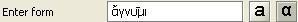
For this reason, when working with many makron marks, you might choose to work with Beta Code.
In most cases, you don't need to type diacritics in Kalós.
On Kalós' screens you will always have a select list with the option "Ignore all".
When you choose that option, Kalós will allow you to enter a word without diacritics.
Internally, the word that you typed in without diacritics is "multiplied" into all possible diacritic variants for that word.
For example, if you typed λυω without any diacritics, and selected the option "Ignore all", Kalós will internally
reconstruct all possible diacritic placements (even those gramatically incorrect).
| λυω | λύω | λύω | λυώ |
| λῦω | λυῶ | λυῳ | λύῳ |
| λῡω | λῡῷ |
|
|
In addition to letters, Beta Code has characters for the diacritics of Classic Greek
| Symbol | Example | ||
| ) | smooth breathing | A) | ἀ |
| ( | rough breathing | A( | ἁ |
| | | iota subscript | W| | ῳ |
| + | dieresis | I+ | ϊ |
| / | acute accent | O/ | ό |
| = | circumflex accent | H= | ῆ |
| \ | grave accent | E\ | ὲ |
| * | capitalization mark | *E | Ε |
| _ | long (makron) mark | I_ | ῑ |
| Σωκράτης | *SWKRA/THJ |
| ἄγω | A)/GW |
| ᾄδω | A|)/DW |